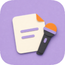
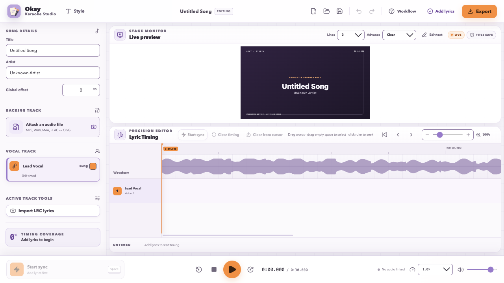
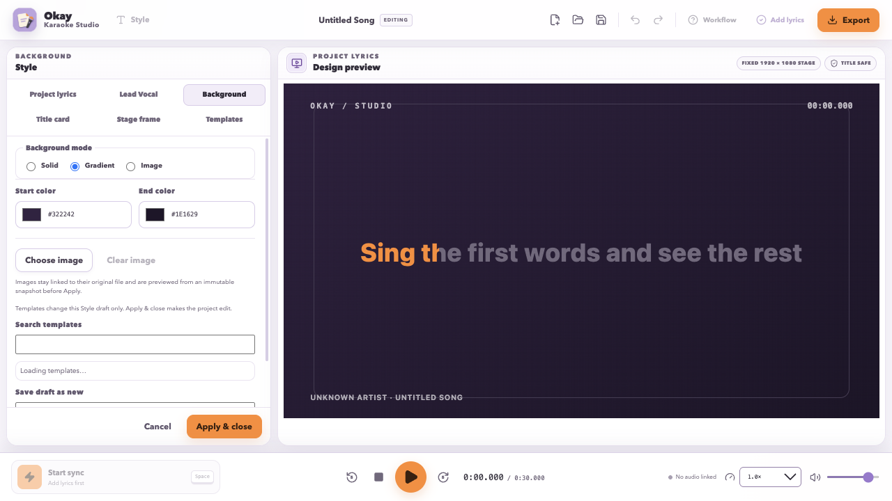
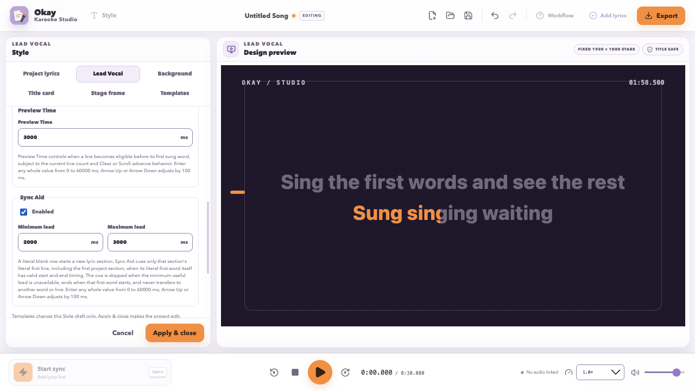

Add the song
Type the title and artist, then attach your backing track.

Okay Karaoke Studio View on GitHubOkay Karaoke Studio
Bring a backing track and some lyrics. Tap along, tidy the timing, choose a look, and export a video people can sing along with.
It will not write the song, remove the vocals, or make you a better singer. It handles the karaoke-video part.

Download and run
A published Windows installer is the easiest route when one is available. If GitHub Releases has none, the current version runs from the project files. No programming knowledge is required, but you will paste two commands into a terminal.
Installer check
If a Windows installer is listed, use it. Otherwise, follow the four short steps below.
Install Node.js 24 or newer, then install Bun 1.3.14 or newer. They let your computer start the current build.
Download the ZIP, open your Downloads folder, and unzip it.
On Windows, right-click the unzipped folder and choose Open in Terminal. On macOS, open Terminal and drag the folder onto its window after typing cd and a space, then press Return.
The first line prepares the app. The second opens it.
bun install --frozen-lockfile
bun run dev
Your first video
The whole job stays in one window. There is also a Workflow guide inside the app if you forget what comes next.
Type the title and artist, then attach your backing track.
Use one lyric line per row. Blank rows keep sections separate.
Play the track and press Space as each word begins.
Drag words and their edges against the waveform until they feel right.
Adjust the lyrics, background, title card, frame, and reusable styles.
Keep an editable project, or export LRC, ASS, or an MP4 video.
Inside the Studio
These are current screenshots of the app, captured at its supported desktop sizes with synthetic content.


What you get
Tap in time, then move or resize individual words against a waveform.
Watch words fill as they are sung, with clear or scrolling line changes.
Choose fonts, colors, alignment, title-card details, and stage elements.
Use a solid color, gradient, or a linked PNG or JPEG image.
Create Enhanced LRC, ASS subtitles, an editable project, or an MP4.
Timing and lyric edits can be undone. A small mercy, but a real one.
Good to know
The Studio links MP3, WAV, M4A, FLAC, AAC, and OGG backing tracks.
No. Bring your own backing track and lyrics. The Studio starts once you have those.
No. They stay linked to their original files, so keep them where the Studio can find them.
Not necessarily. This is an early pre-1.0 app, and the editable project format can still change between builds.
Packaging targets an unsigned Windows x64 installer. When a public download is available, it is listed on GitHub Releases. Source setup works on Windows and macOS; there is no Linux package today.
Okay Karaoke Studio